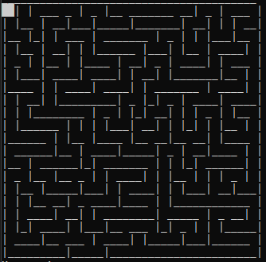
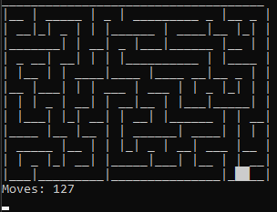

Maze
Maze Generator
Code
- C# program that can generate mazes using recursive backtracker and binary tree algorithms
- Mazes are outputted to the console and players can use keyboard controls to solve them
- Players can choose the dimensions of the maze generated and see how many moves it takes them to solve them
- The program can also attempt to solve the maze itself, although the algorithm it uses is very simple and ineffective
Screenshots

